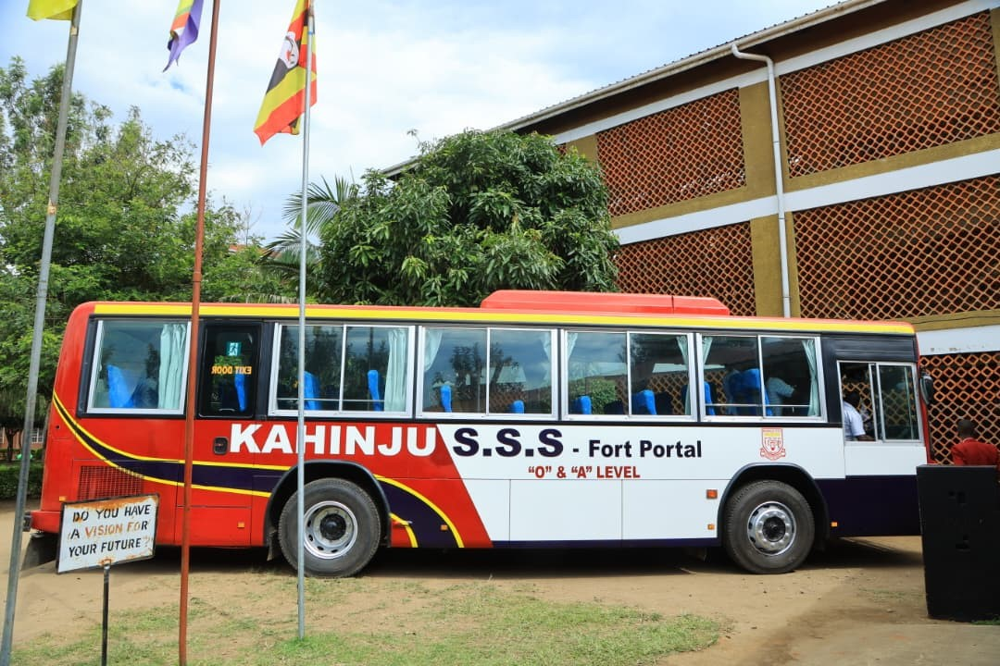

Kahinju Senior Secondary School is a mixed ‘O’ and ‘A’ day government aided school located in Fort portal City a long Bundibugyo road in Rwengoma. The first classes of the Secondary school where conducted in the premises of Kahinju Primary School until the Secondary section was built on what used to be the primary school playground.
In the early days of 1984 the government wanted to support secondary schools and kahinju SSS became a beneficiary as a government aided secondary School. It started as a community school with local leaders mobilizing parents and working closely with the church of St. Andrews C.O.U Rwengoma before government came in to Support.
By 2010, the school population had shot up which caused the government to build modern storeyed buildings which were commissioned in 2012. Due to the high demand of boarding facilities, St Andrews C.O.U lobbed for a donation from the Japanese embassy under leadership of Retired Rev Kyalimpa Philip and a girl’s hostel was constructed church land.

Ready to Serve.
To nurture citizens who strive for quality education that enhances productivity and self reliance.
To provide quality and meaningful education aimed at producing an independent minded healthy and self sustaining /relevant citizen.